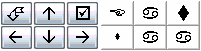

DIY Layout Creator 1.x Tips
2007年07月28日 カテゴリー：メモ・雑記
DIY Feverというサイトにあるフリーソフト「DIY Layout Creator」についていろいろ書いていきます。
※この記事は旧バージョン（DIY Layout Creator 1.x）に関する記事です。
・動作が遅い…
部品を配置するとか選択するとかのときいちいち遅くなるんですが私のPCだけでしょうか…
この点さえ改善されればすごくいいんですけど（ただの文句だ…）。
・間違い？
部品と部品をつなぐ線をジャンパーで描いてあるレイアウトがたまにあります（本家サイトのアップロードされたファイルとかにも）。私も最初やりました。
部品と部品をつなぐ線は左側のToolBoxではなく下側のToolboxにTraceというのがありますのでそれを使った方がいいと思います。ちなみにSolder Padも下側のToolboxにあります。
左側のメニューのBoard PropertiesからLayout typeをPCBにすると、左側のToolBoxにもSolder PadとTraceが出てきます。
・Traceを見やすくする
チュートリアルを見たら載ってます。スペースキーを押すと部品が薄くなってトレースが見やすくなります。もう一度スペースキーを押すと元に戻ります。
・全体の位置を移動

チュートリアルを見たら載ってます。ソフト起動時、ウインドウの右下に上の図の左側のようにボタンがあるはずです（私のPCでは右側のように文字化けしてました）。↑↓←→のボタンで部品を動かせます。右上のボタンは「すべての部品を選択」で、左上のボタンは90度回転です。
・PCBで編集
左側のメニューのBoard PropertiesからLayout typeをPCBにすると、部品を置いたときもれなくSolder Padが付いてきます。移動させても付いたままです。向きが関係するものは四角のSolder Padが付きます。私は後から気付いて損した気分です。
・TraceやSolder Padの太さや色ををまとめて編集
DIY Layout Creatorのファイル「.diy」はテキストファイルがベースで、テキストエディタでも開けます。このとき文字列の置換ができるMicrosoft Wordなどのソフトを使って開きます（私の場合TeraPadとそのツールを使っています）。そして検索文字列に「"5px"」、置換する文字列に「"9px"」と入れてすべて置換すると、5ピクセルの太さのトレースが9ピクセルになるといった具合です。同様にして色を「"Black"」から「"Blue"」に変えたりできます。この方法はいろいろと応用できそうです。
・部品表の順番を変える
部品番号（R1とか）を後から割り振った場合は、部品表の順番がデタラメになることがあります。
上記と同様にテキストエディタで「.diy」ファイルを開きます。部品表はテキストファイルの上から順に表示してるみたいで、行を入れ替えれば部品表の位置も変わります。